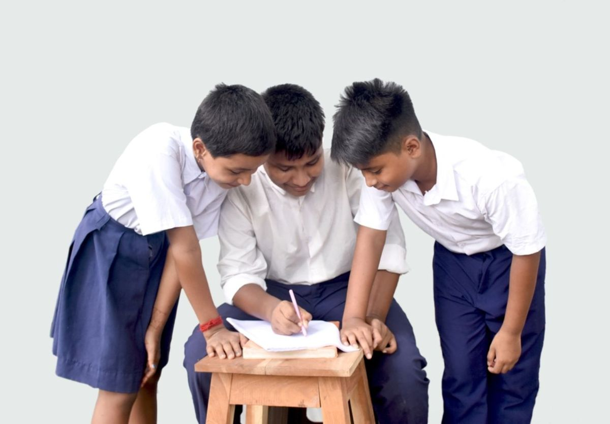

The holiday season is about giving, love, and connection. It’s a time when we reflect on our blessings and reach out to others to share joy. While grand gestures are always appreciated, sometimes it’s the small, everyday acts of kindness that make the biggest impact. Here are simple ways to spread joy and kindness this December.
Reach Out to Someone You Haven’t Talked to in a While
The holiday season is a time for reconnecting. Think about someone you haven’t spoken to in a while and reach out. A quick text, phone call, or even a holiday card can make a world of difference. You never know how much someone might need a simple message of love and support.
Volunteer Your Time
One of the most meaningful ways to give back is by volunteering. Whether it’s serving meals at a shelter, helping with holiday events, or supporting local charities, giving your time is a wonderful way to spread kindness. Volunteering not only helps others but also brings a sense of fulfillment to your own heart.
Donate to a Cause You Believe In
If you’re able to, consider donating to a cause that matters to you. Whether it’s food, clothes, or money, your contribution can make a real difference. You can also donate toys, books, or goods to local charities, knowing that they will bring joy to someone in need.
Practice Random Acts of Kindness
Small, unexpected acts of kindness can brighten someone’s day. Whether it’s paying for someone’s coffee, helping a neighbor with their groceries, or simply offering a sincere compliment, these small gestures can spread joy and inspire others to do the same. Random acts of kindness create a ripple effect that spreads goodwill far and wide.
Spend Quality Time with Loved Ones
This time of year is perfect for spending quality moments with friends and family. Set aside time to be present with the people you care about. Whether it’s enjoying a meal together, watching a movie, or just chatting, these moments of connection are what make the holidays special. Your presence is the best gift you can give.
Be Kind to Yourself
The holiday season can be stressful, so don’t forget to show yourself kindness. Take time for self-care, whether it’s reading, taking a walk, or enjoying a cup of tea. When you take care of yourself, you’re better equipped to spread joy and kindness to others.
By spreading kindness this December, you create a more compassionate, connected world. Whether through small acts of kindness, time spent with loved ones, or simply showing appreciation, you can make a difference in the lives of those around you.